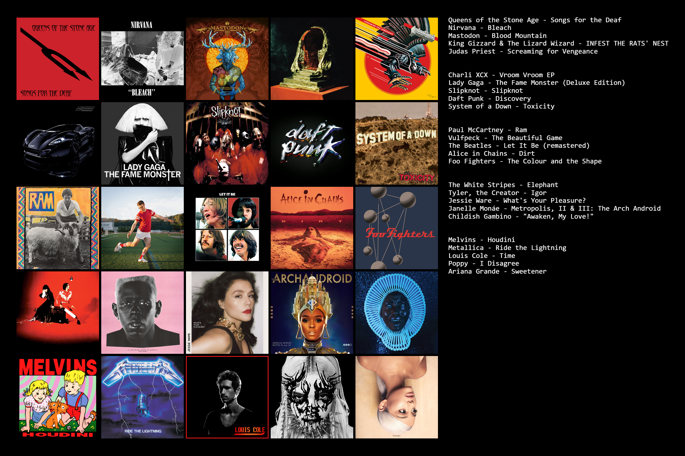

Hi! My name is Logan and I'm currently a University of North Texas student working on a bachelor's in computer science which I will complete
in May of 2024. Originally, I didn't go into college as a CS major, but when I took my first computer science class I fell in love with
coding. My following semester I decided that I would enjoy my professional career much more as a developer rather than as
an electrical engineer, so I made the switch and have been spending long days staring at my computer screen ever since.
One of my favorite things about computer science is getting to know how the sausage is made. Being able to interact with software and
technology that I use every day and know how it works brings me immense joy. So far I've learned about databases and SQL.
I've learned languages like C/C++, Python, and Java. I've picked up HTML and CSS in making this very site. I've also learned a lot about
how the internet works. From ethernet frames and how they get from point A to point B, to encryption and other cybersecurity techniques that makes
using the internet safe.
I always have some ideas in my head about what I might make next. If only I had the time and energy to work on them all.
The languages I've used include
I like to listen to lots of music, and I could talk about it all day. So instead, here's some of my favorite albums by my favorite artists:
As alluded to above, I also play music; I've been playing guitar, bass, and drums since I was 13. In addition to being fun, I find that playing an instrument is a great way to reset when I've been stuck on something for too long. I also like to keep up with the other American football (MLS), and root for Austin FC. Vamos verde!